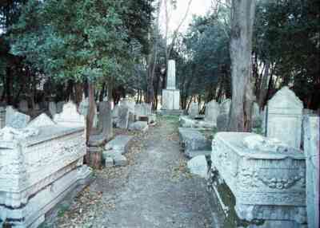

The mourners recite the following blessing when they rip their outer garments.
WE PRAISE ADONAI OUR GOD, KING UNIVERSE. WHY? HE JUDGE JUST1.
Those who have not seen a cemetery for thirty days recite the following blessing when arriving.
LORD OUR GOD, KING WORLD~GENERAL, WE PRAISE. WHY? YOURSELF (1) MAKE US JUST, (2) (<) FEED, (>) RAISE US JUST, (3) MATCH OUR LIFE JUST, (4) KNOW POSS."each"2 JUST, (5) HELP DEAD GET-UP LIVE AGAIN JUST. LORD OUR GOD, WE PRAISE. WHY? HIMSELF HELP DEAD LIVE AGAIN.
SUPPOSE SOMEONE DIE. YOU SUMMON, (role play God) GET-UP LIVE. (end role play) POWER YOURS+ CONTINUE FOREVER. YOU HELP LIVE CONTINUE. SOMEONE DIE, YOU HAVE-MERCY (role play God) (2h)COME-ON, GET-UP, LIVE FOREVER CAN. (end role play) (<) SOMEONE FAIL, YOU SUPPORT. (>) SOMEONE SICK, YOU HELP RECOVER. (<) OPPRESSION3, YOU OPPRESSION-OFF4. (>) SOMEONE LOWERED-INTO-GRAVE5, CAN TRUST YOU HELP. WHO HAVE POWER LIKE YOU WHO? IDEA~LIKE6 KING, (<) BLAME RIGHT, PROCEED KILL, (>) BLAME WRONG, ALLOW LIFE. SAVE, YOURS+.
WHO WILLING HAVE-MERCY-ON-us LIKE YOU? EVERYTHING LIVE, DEPEND++-God. REMEMBER HELP"each". PEOPLE DIE, WE TRUST YOU SUMMON, LIVE FOREVER.
When the deceased is brought to the cemetery, the following is recited. However it is omitted when Tachanun is not recited.
OUR FOUNDATION7, HIM. HIS WORK COOPERATE. HIS+ JUST. TRUST HIM, NO SIN HIS+. UPRIGHT8 AND FAIR HIS+.
OUR FOUNDATION HIM. HIS WORK BLEND-TOGETHER9. WHO NERVE10 TELL HIM, (role play to God) WRONG YOU. (end role play) (<) HE RULE HEAVEN, (>) HE RULE EARTH. (<) BRING DEATH, (>) BRING LIFE. (<) SOME LOWERED-INTO-GRAVE, (>) SOME RISE-UP.
OUR FOUNDATION HIM. HIS WORK PERFECT. WHO NERVE TELL HIM, (role play to God) WRONG YOU. (end role play) HE COMMAND, WORLD OBEY-God. WE WORTHLESS, BUT PLEASE GO-AHEAD KIND. ISAAC11 BOUND12 LIKE LAMB. FOR HIS S-A-K-E HELP-us.
EVERYTHING HIS+ UPRIGHT. FOUNDATION PERFECT. BE-PATIENT WITH US. MERCY-ON-us US OVERFLOW13 SHOULD. PLEASE NOW (<) MERCY-ON PARENTS, (>) MERCY-ON CHILDREN. MASTER YOU TEND MERCY-ON-us, FORGIVE US.
UPRIGHT YOU, LORD. (<) SOME LOWERED-INTO-GRAVE, (>) SOME RISE-UP. ALL SPIRIT YOU SUPERVISE. NOT NATURAL YOU DESTROY OUR NAME. LOOK-DOWN-FROM-heaven-ON-us PAY-ATTENTION-TO-us. MASTER YOU TEND MERCY-ON-us, FORGIVE US.
SUPPOSE PERSON LIVE (<) ONE YEAR, (>) ONE THOUSAND YEAR, DOESN'T-MATTER. STILL COMPARE-us-TO-God, WE WORTHLESS. TRUE JUDGE, WE PRAISE YOU. (<) SOME LOWERED-INTO-GRAVE, (>) SOME RISE-UP. WE ACCEPT.
PRAISE HIM. HE JUDGE TRUE. HEAVEN, HE LOOK"each". (<) DECIDE (role play God) (<) GOOD INDEX"each@lf", (>) DECIDE BAD INDEX"each@rt". (end role play) ALL ANNOUNCE HIS NAME SHINY.
LORD, WE KNOW-THAT14 YOU JUDGE UPRIGHT. (<) INFORM RIGHT, (>) JUDGE PURE15. COMPLAIN ABOUT YOU JUDGE, NEVER. UPRIGHT YOU, LORD. YOU JUDGE FAIR16.
TRUE JUDGE YOU. (<) JUDGE UPRIGHT, (>) JUDGE TRUTH. WE PRAISE TRUE JUDGE. WHY? (<) JUDGE UPRIGHT, (>) JUDGE TRUTH.
EVERYTHING LIVE, THEIR SOUL YOU CONTROL. (<) YOUR STRENGTH, (>) YOUR POWER, UPRIGHT. YOUR SHEEP (2h)alt.DIE. FEW LEFT, PLEASE MERCY. TELL-lf ANGEL CONTROL DEATH, (role play God) SAY-#NO*, FINISHwg.
YOU ADVISE GREAT, HELP US LONG-LIST17. PEOPLE STRAY-LEFT-AND-RIGHT18, YOU LOOK-DOWN*. (<) GOOD, REWARD; (>) BAD, PUNISH.
>ME ANNOUNCE, LORD JUST. MY FOUNDATION MAKE-MISTAKE NEVER.
(<) LORD GIVE, (>) LORD TAKE-UP. EITHER (2h)alt.INDEX, PRAISE HIS NAME.
HE MERCY"each". FORGIVE SIN AND DESTROY NOT. FREQUENTLY SUPRESS-ANGER, FULL MAD NOT-THAT.
Mourner. HIS NAME WE MAGNIFY, RECOGNIZE PURE. Cong. AMEN.
IN WORLD HE CREATE LIKE HE REALLY-WANT. PRAY EVERYONE ACCEPT AUTHORITY HIS-rt DURING YOUR”all” LIFE AND YOUR”all” TIME AND LIFE (2h)#ALL JEWISH PEOPLE, QUICKLY AND SOON. COME-ON SAY, AMEN.
PRAY WE CONTINUE PRAISE HIS GREAT NAME FROM-NOW-ON FOREVER-AND-EVER.
Mourner. WE THANK, PRAISE, RECOGNIZE HIS BEAUTY ADVANCED. LIFT-UP HIS SPLENDOR. SING HIS NAME PURE AND SUPREME. Cong. BOW-DOWN-TO HIM. WE REALIZE THANK, SING, PRAISE, AND COMFORT WE SPEAK HERE WORLD, NOT ENOUGH DESCRIBE ALL HIS MANY CHARACTERISTIC (From Rosh Hashana to Yom Kippur add: #AT-ALL). COME-ON SAY, AMEN.
PRAY HEAVEN SEND (<) PEACE OVERFLOW, (>) LIFE GOOD, FOR US, PLUS (2h)#ALL JEWISH PEOPLE. COME-ON SAY, AMEN.
LIKE GOD MAKE PEACE FAR-AWAY HEAVEN, PRAY HE HAVE-MERCY-ON-us MAKE PEACE FOR US HERE AND FOR (2h)#ALL JEWISH PEOPLE. COME-ON SAY, AMEN.
HIS NAME WE MAGNIFY, RECOGNIZE PURE. Cong. AMEN.
IN WORLD HE CREATE LIKE HE REALLY-WANT. PRAY EVERYONE ACCEPT AUTHORITY HIS-rt DURING YOUR”all” LIFE AND YOUR”all” TIME AND LIFE (2h)#ALL JEWISH PEOPLE, QUICKLY AND SOON. COME-ON SAY, AMEN.
PRAY WE CONTINUE PRAISE HIS GREAT NAME FROM-NOW-ON FOREVER-AND-EVER.
WE THANK, PRAISE, RECOGNIZE HIS BEAUTY ADVANCED. LIFT-UP HIS SPLENDOR. SING HIS NAME PURE AND SUPREME. Cong. BOW-DOWN-TO HIM. WE REALIZE THANK, SING, PRAISE, AND COMFORT WE SPEAK HERE WORLD, NOT ENOUGH DESCRIBE ALL HIS MANY CHARACTERISTIC (From Rosh Hashana to Yom Kippur add: #AT-ALL). COME-ON SAY, AMEN.
HEAVENLY-FATHER, PLEASE ACCEPT WHAT (2h)#ALL JEWISH PEOPLE PRAY AND BEG. COME-ON SAY, AMEN.
PRAY HEAVEN SEND (<) PEACE OVERFLOW, (>) LIFE GOOD, FOR US, PLUS (2h)#ALL JEWISH PEOPLE. COME-ON SAY, AMEN.
LIKE GOD MAKE PEACE FAR-AWAY HEAVEN, PRAY HE HAVE-MERCY-ON-us MAKE PEACE FOR US HERE AND FOR (2h)#ALL JEWISH PEOPLE. COME-ON SAY, AMEN.
Footnotes
A. Death and Venice writing contest - Old Jewish Cemetery on Venice's Lido.